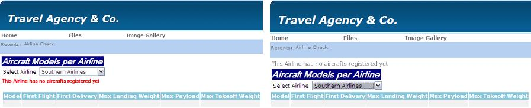
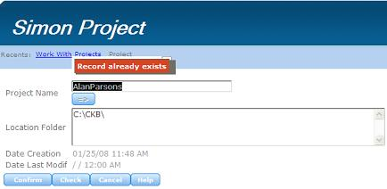

The Error Viewer control is used to display messages to the user with the msg command. To add an Error Viewer control to the selected location, drag the corresponding icon from the toolbox to the Web Form. If the Error Viewer control is not inserted in the form and the msg() function is used, the message will be displayed in the upper left-hand corner of the screen. Otherwise, it will appear where the control was placed. This means that Web Objects have an implicit Error Viewer control for displaying messages when the msg() function is used.  With the inserted control Without the inserted control The place where messages will be displayed depends on the triggering moment. In Web Transactions, the Error Viewer control is used to display messages of events executed in the server. When a message ("msg") or error is triggered in the server (for example, "Record already exists"), it will be displayed as a list in the Error Viewer control. When messages are displayed by Ajax in the client, they are shown in Message Texts, more precisely over the fields completed by the user (when the focus is lost), as shown in the figure below. 
|
| Backlinks | |
| Category:Common Controls | Getting started with RWD: Understanding default forms |
| Web Panel form |